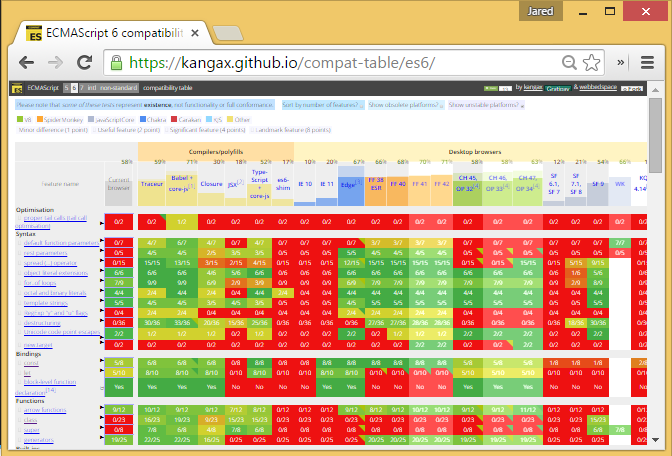
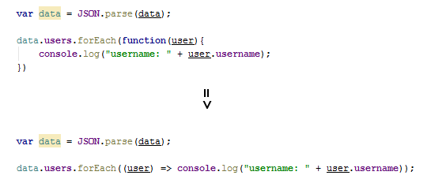

ECMAScript 2015 & JavaScript
Don't Get Left Behind
Created by Jared Faris / @jaredthenerd
History of ECMAScript & JavaScript
Support
Variable Scoping
Hoisting Example
Where Variables Get Hoisted


ES5 Scope
- Global
- Function
Function Scope Demo
Let & Const
Let
The "let" keyword creates a local block scope.
if (myVar > 5) {
let myVarSquared = myVar * myVar;
console.log(myVarSquared);
}
Usable inside of if/else and loops.
Let Demo
Let Hoisting
This is known as the "Temporal Dead Zone"
Limitations
- Switch statements are a single block.
- Chrome currently requires strict mode.
- Firefox requires a special script tag `type="application/javascript;version=1.7"`
- The special tag isn't compatible with Chrome...
Const
Creates a read only reference in global, function or block scope.
function() {
const MY_PREFIX = "test";
var myString = MY_PREFIX + "string"; // "teststring";
MY_PREFIX = "test2"; // throws an error
const MY_PREFIX = "test2"; // also throws an error
}
Immutability
Constants don't hold immutable values, they hold read-only references to a value.
Const Scope
Constants can't share their names with functions or variables in the same scope.
Limitations
- Re-assigning a value fails silently in Chrome and Firefox.
- It doesn't fail in Safari...
- Different browser errors if used before declaration.
- Different errors with "use strict".
"Use Strict" Behavior
Classes
Class Declaration
class Profile {
constructor(emailAddress) {
this.emailAddress = emailAddress;
}
}
Class Expression
var Profile = class {
constructor(emailAddress) {
this.emailAddress = emailAddress;
}
}
var Profile = class Profile {
constructor(emailAddress) {
this.emailAddress = emailAddress;
}
}
Using a Class
Classes are Functions
Setters and Getters
Inheritance & Subclassing
Super
Calls the corresponding function or constructor on the parent class.
Static Methods
Methods that exist on the class, and not on instances of it.
Hoisting Differences
Class declarations are not hoisted!
Prototypical Inheritance
Classes are syntactical sugar over PI. You can still use the object's prototype
Other Oddities
- Class declarations/expressions are internally "strict mode"
- Semicolons are allowed between methods and not required.
Limitations
- Only supported by Chrome as of 9/10/2015 and requires strict mode
Arrow Functions
Arrow Function Syntax
var oldWay = function (param1, param2) {
// do stuff
};
var newWay = (param1, param2) => {
// do stuff
};
How Arrow Functions Work
- Similar to a lambda expression
- Can have 0+ parameters
- Can be saved in a named variable
Two Primary Benefits
- Shorter functions
- Lexical this
Shorter Functions
Improved?
Arrow... see what I did there?
Lexical?
- Lexical scoping - scope is defined by where a function is defined
- Dynamic scoping - scope is defined by the program's state at execution
- JavaScript is generally lexically scoped
- Depending on how you copy or refer to a function, you may change `this`
- This is very confusing
Lexical This
When To Use?
- When creating methods (reusable function objects), use functions.
- When creating subroutins/callbacks, use arrows.
Bonus: Immediately Invoked Arrow Functions
(x => x^2)(9); // 81
Limitations
- Supported by Edge, Firefox and Chrome
Promises
Promises and Futures
- Future - a value that will be set at some point in the future
- Promise - An asynchronous function that will set this value
- Used in asynchronous programming to allow parallel processing
- Allows you to proxy something that hasn't actually been set yet in code
- Useful for reducing callback chains
Callbacks
//asyncCall(successCallback, errorCallback)
asyncCall(function(data) {
// if successful, make another call with the data
asyncCall2(data.someProperty, function(data) {
// do something
asyncCall3(data.someOtherProperty, function(data) {
// do something else
}
}, function (data) {
// error handling
}
}, function(data) {
// error handling
}
Pyramid coding
Promises
asyncCall()
.then((data) => asyncCall2(data.someProperty))
.then((data) => asyncCall3(data.someOtherProperty))
.error((data) => {
// error handling
})
Ajax Promises
Post-resolve Behavior
Support
Edge, Chrome, Firefox, Safari 9
'use strict' again
Default Parameters
Setting up Default Parameters
function callService(data, version = 3.0) {
//stuff
}
Firefox only as of 9/14/2015
Evaluated every call
Template Strings
String Formatting
console.log(`HTTP ${errorNumber} returned from ${errorURL}`);
console.log(`2 + 2 = ${2+2}`);
Template Example
Generator Methods
Generator Idea
- Can pause their own execution with the 'yield' keyword
- Can be resumed with 'next'
- Allows repetitive or asynchronous code to be more clear
Generator Methods Demo
?
Modules
Built in Modules
Similar in concept to AMD or CommonJS patterns.
Export and Import
export.js
export function module1ConsoleLogger () {
console.log("Foo"); // writes "Foo"
}
import.js
import {module1ConsoleLogger} from "module-1-export.js"
function module1Demo() {
module1ConsoleLogger();
}
Limitations
You can't use these anywhere yet.
Support & Transpiling
Transpiling
A compiler that translates one language (ES6) to another (ES5).
Demo using Grunt-Babel
grunt transpileLook at the samples-dist directory.
This Presentation
Find/replace "samples/" with "samples-dist/"